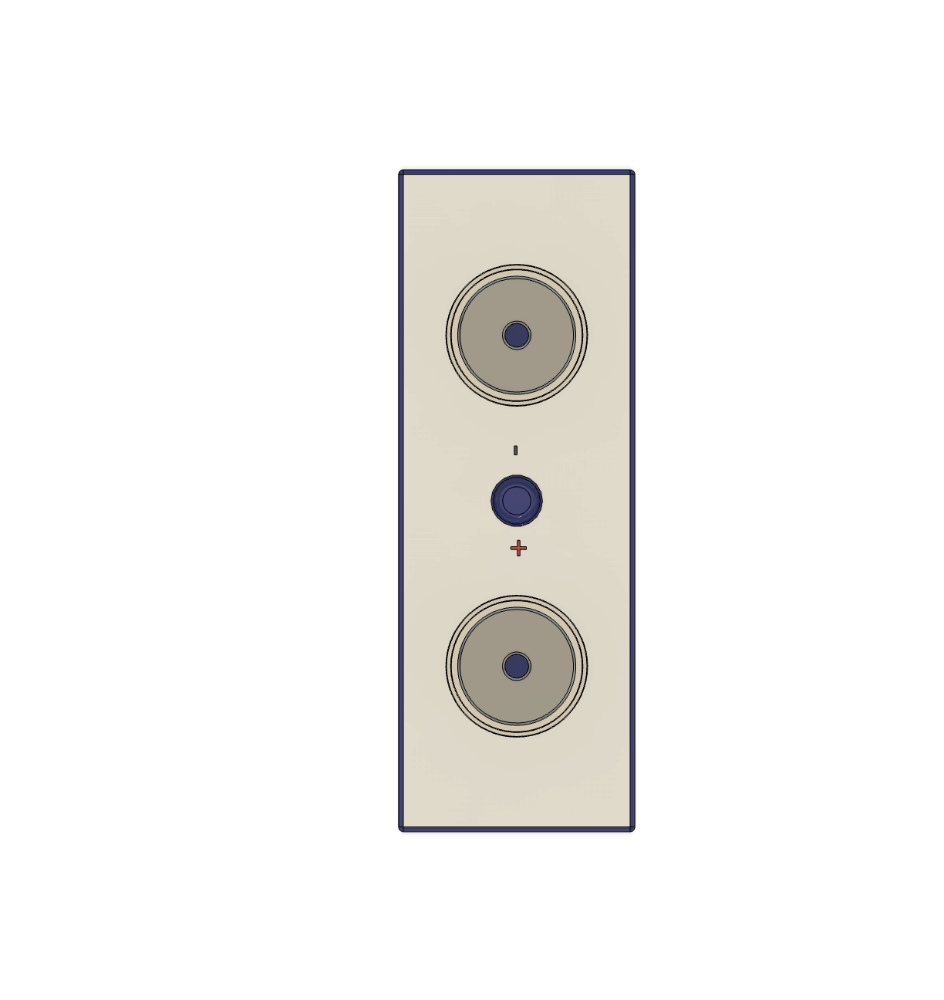

Budowa fizyczna
| Element | Opis |
|---|---|
| Katoda | Elektroda dodatnia wykonana z materiałów takich jak tlenki metali (np. litowo-kobaltowe). |
| Anoda | Elektroda ujemna, najczęściej z grafitu, magazynująca jony litu podczas ładowania. |
| Elektrolit | Przewodnik jonowy w postaci cieczy, żelu lub ciała stałego umożliwiający przepływ jonów między anodą a katodą. |
| Separator | Cienka warstwa izolacyjna zapobiegająca kontaktowi między anodą a katodą, pozwalając jednocześnie na przepływ jonów. |
| Obudowa | Hermetyczna osłona chroniąca ogniwo przed uszkodzeniami mechanicznymi i warunkami atmosferycznymi. |
Działanie ogniwa
Ogniwo bateryjne działa na zasadzie reakcji elektrochemicznych zachodzących między anodą i katodą, z udziałem elektrolitu.
Ładowanie: Podczas ładowania jony litu przemieszczają się z katody do anody poprzez elektrolit, gromadząc energię chemiczną.
Rozładowanie: W trakcie pracy jony przemieszczają się z powrotem z anody do katody, generując przepływ elektronów, który zasila urządzenia elektryczne.
Zalety i wady
| Kategoria | Opis |
|---|---|
| Zalety |
|
| Wady |
|